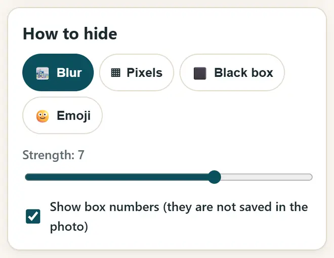

ಫೋಟೋ ಹಂಚುವ ಮೊದಲು ಅದರಲ್ಲಿನ ಮುಖಗಳನ್ನು ಬ್ಲರ್ ಮಾಡುವುದು ಹೇಗೆ
ತರಗತಿಯ ಫೋಟೋ, ಕಚೇರಿ ಕಾರ್ಯಕ್ರಮ, ಅಂಗಡಿಯಲ್ಲಿ ನಿಂತ ಗ್ರಾಹಕ: ಫೋಟೋ ಯಾವುದೇ ಗ್ರೂಪ್ಗೆ ಅಥವಾ ಸೋಶಿಯಲ್ ಮೀಡಿಯಾಕ್ಕೆ ಹೋಗುವ ಮೊದಲು, ಒಪ್ಪಿಗೆ ನೀಡದವರನ್ನು ಮರೆಮಾಡಿ. ಒಂದು ನಿಮಿಷ ಸಾಕು; ಫೋಟೋ ನಿಮ್ಮ ಫೋನ್ನಿಂದ ಹೊರಹೋಗುವುದಿಲ್ಲ.
ಸಂಕ್ಷಿಪ್ತ ಉತ್ತರ
ಮುಖ ಬ್ಲರ್: ಸುರಕ್ಷಿತ ಹಂಚಿಕೆ ತೆರೆದು “ಫೋಟೋ ಆರಿಸಿ” ಒತ್ತಿ. AI ಮುಖಗಳನ್ನು ಹುಡುಕಿ ಮರೆಮಾಡುತ್ತದೆ. ಯಾವುದಾದರೂ ಮುಖವನ್ನು ಮತ್ತೆ ತೋರಿಸಲು ಅದರ ಪೆಟ್ಟಿಗೆ ಮೇಲೆ ಟ್ಯಾಪ್ ಮಾಡಿ; ನಂಬರ್ ಪ್ಲೇಟ್, ಹೆಸರಿನ ಬ್ಯಾಡ್ಜ್ಗಳಿಗೆ “ಚೌಕ ಬರೆಯಿರಿ” ಬಳಸಿ; ಮರೆಮಾಡುವ ವಿಧಾನ ಆಯ್ಕೆಮಾಡಿ (“ಕಪ್ಪು ಚೌಕ” ಮತ್ತು “ಎಮೋಜಿ” ಚೆನ್ನಾಗಿ ಮರೆಮಾಡುತ್ತವೆ) “JPG ಆಗಿ ಉಳಿಸಿ” ಒತ್ತಿ. ಸೇವ್ ಆದ ಫೋಟೋದಲ್ಲಿ GPS ಸ್ಥಳ ಇರುವುದಿಲ್ಲ.
5 ಹಂತಗಳಲ್ಲಿ ಮುಖಗಳನ್ನು ಮರೆಮಾಡಿ
-
ಫೋಟೋ ಆಯ್ಕೆಮಾಡಿ
ಮುಖ ಬ್ಲರ್: ಸುರಕ್ಷಿತ ಹಂಚಿಕೆ ತೆರೆದು “ಫೋಟೋ ಆರಿಸಿ” ಒತ್ತಿ; ಇದು ಹೇಗೆ ಕೆಲಸ ಮಾಡುತ್ತದೆ ಎಂದು ನೋಡಲು “ಮಾದರಿ ಫೋಟೋ ನೋಡಿ” ಒತ್ತಬಹುದು. ಮೊದಲ ಬಾರಿ ಮುಖ ಹುಡುಕುವ AI ಒಮ್ಮೆ ಡೌನ್ಲೋಡ್ ಆಗುತ್ತದೆ (Wi-Fi ಉತ್ತಮ).
-
ಪ್ರತಿ ಮುಖವನ್ನೂ ಪರಿಶೀಲಿಸಿ
ಸಿಕ್ಕ ಮುಖಗಳು ತಾವಾಗಿಯೇ ಮರೆಯಾಗುತ್ತವೆ. ಯಾರದಾದರೂ ಮುಖವನ್ನು ಮತ್ತೆ ತೋರಿಸಬೇಕಿದ್ದರೆ, ಉದಾಹರಣೆಗೆ ಒಪ್ಪಿಗೆ ನೀಡಿದವರದು, ಅವರ ಪೆಟ್ಟಿಗೆ ಮೇಲೆ ಟ್ಯಾಪ್ ಮಾಡಿ; ಮತ್ತೆ ಟ್ಯಾಪ್ ಮಾಡಿದರೆ ಮರೆಯಾಗುತ್ತದೆ. ಹಿಂದಿರುವ ಚಿಕ್ಕ ಮುಖಗಳು ತಪ್ಪಿಹೋಗಿದ್ದರೆ “ಸಣ್ಣ ಮುಖಗಳನ್ನು ಜಾಗ್ರತೆಯಿಂದ ಹುಡುಕಿ” ಒತ್ತಿ.

ಮುಖಗಳು ಸಿಕ್ಕು ಮರೆಯಾಗಿವೆ. ತೋರಿಸಲು ಅಥವಾ ಮರೆಮಾಡಲು ಪೆಟ್ಟಿಗೆ ಮೇಲೆ ಟ್ಯಾಪ್ ಮಾಡಿ. -
ಇತರ ಖಾಸಗಿ ವಿವರಗಳನ್ನೂ ಮುಚ್ಚಿ
“ಚೌಕ ಬರೆಯಿರಿ” ಒತ್ತಿ, ನಂಬರ್ ಪ್ಲೇಟ್, ಮನೆ ಸಂಖ್ಯೆ, ಹೆಸರಿನ ಬ್ಯಾಡ್ಜ್, ID ಕಾರ್ಡ್ ಮತ್ತು ಸ್ಕ್ರೀನ್ಗಳ ಮೇಲೆ ಎಳೆದು ಪೆಟ್ಟಿಗೆ ಬಿಡಿಸಿ.
-
ಮರೆಮಾಡುವ ವಿಧಾನ ಆಯ್ಕೆಮಾಡಿ
“ಮಸುಕು”, “ಪಿಕ್ಸೆಲ್”, “ಕಪ್ಪು ಚೌಕ” ಅಥವಾ “ಎಮೋಜಿ” ಆಯ್ಕೆಮಾಡಿ, ತೀವ್ರತೆ ಹೊಂದಿಸಿ. ಕಪ್ಪು ಪೆಟ್ಟಿಗೆ ಅಥವಾ ಇಮೋಜಿ ಚೆನ್ನಾಗಿ ಮರೆಮಾಡುತ್ತವೆ; ಹಗುರ ಬ್ಲರ್ನಲ್ಲಿ ಮುಖವನ್ನು ಕೆಲವೊಮ್ಮೆ ಇನ್ನೂ ಗುರುತಿಸಬಹುದು.

ಮರೆಮಾಡುವ ವಿಧಾನ ಆಯ್ಕೆಮಾಡಿ: ಬ್ಲರ್, ಪಿಕ್ಸೆಲ್, ಕಪ್ಪು ಪೆಟ್ಟಿಗೆ ಅಥವಾ ಇಮೋಜಿ. -
ಸ್ಥಳ ಪರಿಶೀಲಿಸಿ, ಸೇವ್ ಮಾಡಿ
ಮೂಲ ಫೈಲ್ ಒಳಗೆ GPS ಸ್ಥಳ ಇದೆಯೇ ಎಂದು “ಸ್ಥಳ ಪರಿಶೀಲನೆ” ತಿಳಿಸುತ್ತದೆ. “JPG ಆಗಿ ಉಳಿಸಿ” ಅಥವಾ “PNG ಆಗಿ ಉಳಿಸಿ” ಒತ್ತಿ: ಸೇವ್ ಆಗುವ ಫೋಟೋ ಹೊಸದಾಗಿ ಬಿಡಿಸಲ್ಪಡುತ್ತದೆ; ಹಾಗಾಗಿ ಅದರಲ್ಲಿ ಸ್ಥಳ ಮತ್ತು ಕ್ಯಾಮೆರಾ ವಿವರಗಳು ಇರುವುದಿಲ್ಲ. ಹಂಚುವ ಮೊದಲು ಜೂಮ್ ಮಾಡಿ ಇನ್ನೊಮ್ಮೆ ಪರಿಶೀಲಿಸಿ.
ಹಂಚುವ ಮೊದಲು: ತಿಳಿದಿರಬೇಕಾದದ್ದು
- ಕ್ಯಾಮೆರಾ ಕಡೆ ನೋಡುವ ಹೆಚ್ಚಿನ ಮುಖಗಳನ್ನು AI ಹುಡುಕುತ್ತದೆ. ತಿರುಗಿದ, ಮುಚ್ಚಿದ ಅಥವಾ ತುಂಬಾ ಚಿಕ್ಕ ಮುಖಗಳು ತಪ್ಪಿಹೋಗಬಹುದು; ಹಾಗಾಗಿ ಯಾವಾಗಲೂ ಪರಿಶೀಲಿಸಿ, ಕೈಯಿಂದ ಪೆಟ್ಟಿಗೆಗಳನ್ನು ಸೇರಿಸಿ.
- ಮೊದಲು ಕೇಳಿ. ಭಾರತದ ಡಿಜಿಟಲ್ ಪರ್ಸನಲ್ ಡೇಟಾ ಪ್ರೊಟೆಕ್ಷನ್ ಕಾಯ್ದೆ, 2023 ರ ಪ್ರಕಾರ ಒಬ್ಬ ವ್ಯಕ್ತಿಯನ್ನು ಗುರುತಿಸಬಹುದಾದ ಫೋಟೋ ಅವರ ವೈಯಕ್ತಿಕ ಡೇಟಾ. ಮಕ್ಕಳ ವಿಷಯದಲ್ಲಿ ಪೋಷಕರನ್ನು ಕೇಳಿ.
- ಸಮವಸ್ತ್ರ, ಶಾಲೆಯ ಹೆಸರು, ನಾಮಫಲಕ ಅಥವಾ ಮನೆ ಸಂಖ್ಯೆಯಿಂದಲೂ ಮಗು ಎಲ್ಲಿ ಓದುತ್ತದೆ, ಎಲ್ಲಿ ವಾಸಿಸುತ್ತದೆ ಎಂದು ಅಪರಿಚಿತರಿಗೆ ತಿಳಿಯಬಹುದು. ಅವನ್ನೂ ಮುಚ್ಚಿ.
- ಮೂಲ ಫೈಲ್ ಅಲ್ಲ, ಸೇವ್ ಆದ ಪ್ರತಿಯನ್ನು ಹಂಚಿ. ಫೋಟೋದ ಪೂರ್ತಿ ಬ್ಯಾಕ್ಗ್ರೌಂಡ್ ತೆಗೆಯಲು AI ಹಿನ್ನೆಲೆ ತೆಗೆಯುವ ಸಾಧನ ಬಳಸಿ.
ಹೊಸ ಉಚಿತ ಟೂಲ್ಗಳು ಮತ್ತು ಹಿಂದಿಯಲ್ಲಿ AI ಪಾಠಗಳನ್ನು ಪಡೆಯಿರಿ
ನಮ್ಮ ಇಮೇಲ್ ಪಟ್ಟಿಗೆ ಸೇರಿ: ಹೊಸ ಉಚಿತ ಆ್ಯಪ್ಗಳು, ಹೊಸ ಮಾರ್ಗದರ್ಶಿಗಳು ಮತ್ತು AI ಕುರಿತ ಹಿಂದಿ ವೀಡಿಯೊ ಪಾಠಗಳ ಮಾಹಿತಿ ನಿಮಗೆ ಬರುತ್ತದೆ. ಸ್ಪ್ಯಾಮ್ ಇಲ್ಲ.
ವಯಸ್ಕರಿಗೆ (18+) ಮಾತ್ರ. ಯಾವಾಗ ಬೇಕಾದರೂ ಹೆಸರು ತೆಗೆಸಬಹುದು.
ನಾವು ಈ ಟೂಲ್ಗಳನ್ನು ಏಕೆ ಸೂಚಿಸುತ್ತೇವೆ
- ಎಲ್ಲರಿಗೂ ಉಚಿತ: ಜಾಹೀರಾತು ಇಲ್ಲ, ಸೈನ್-ಅಪ್ ಇಲ್ಲ, ಪಾವತಿ ಯೋಜನೆ ಇಲ್ಲ.
- ಖಾಸಗಿ: ನಿಮ್ಮ ಫೈಲ್ಗಳು ಮತ್ತು ವಿವರಗಳು ನಿಮ್ಮ ಸ್ವಂತ ಸಾಧನದಲ್ಲೇ ಇರುತ್ತವೆ.
- ಫೋನ್, ಲ್ಯಾಪ್ಟಾಪ್ ಅಥವಾ ಸ್ಮಾರ್ಟ್ಬೋರ್ಡ್ನಲ್ಲಿ ಕೆಲಸ ಮಾಡುತ್ತವೆ, ಒಮ್ಮೆ ತೆರೆದ ನಂತರ ಇಂಟರ್ನೆಟ್ ಇಲ್ಲದೆಯೂ.
- ಕನ್ನಡ ಮತ್ತು ಹಿಂದಿ ಸೇರಿದಂತೆ 12 ಭಾಷೆಗಳಲ್ಲಿ.
ವೀಡಿಯೊ ಮೂಲಕ ಕಲಿಯಲು ಇಷ್ಟವೇ? ನಮ್ಮ YouTube ಚಾನೆಲ್ನಲ್ಲಿ AI ಮತ್ತು ಉಚಿತ ಟೂಲ್ಗಳ ಹಿಂದಿ ಪಾಠಗಳನ್ನು ನೋಡಿ.
ಆಗಾಗ ಕೇಳುವ ಪ್ರಶ್ನೆಗಳು
ನನ್ನ ಫೋಟೋ ಅಪ್ಲೋಡ್ ಆಗುತ್ತದೆಯೇ?
ಇಲ್ಲ. ಮುಖ ಹುಡುಕುವ AI ಮಾತ್ರ ನಿಮ್ಮ ಸಾಧನಕ್ಕೆ ಡೌನ್ಲೋಡ್ ಆಗುತ್ತದೆ, ಅದೂ ಒಮ್ಮೆ ಮಾತ್ರ. ಫೋಟೋ ನಿಮ್ಮ ಫೋನ್ ಅಥವಾ ಕಂಪ್ಯೂಟರ್ನಿಂದ ಹೊರಹೋಗುವುದಿಲ್ಲ.
ನಂತರ ಯಾರಾದರೂ ಬ್ಲರ್ ತೆಗೆಯಬಹುದೇ?
ಸೇವ್ ಆದ ಫೋಟೋ ಒಂದು ಹೊಸ ಚಿತ್ರ: ಮೂಲ ಚಿತ್ರ ಅದರೊಳಗೆ ಅಡಗಿರುವುದಿಲ್ಲ. ಕಪ್ಪು ಪೆಟ್ಟಿಗೆ ಅಥವಾ ಇಮೋಜಿಯನ್ನು ತೆಗೆಯಲು ಆಗುವುದಿಲ್ಲ. ಹಗುರ ಬ್ಲರ್ನಲ್ಲಿ ಮುಖವನ್ನು ಕೆಲವೊಮ್ಮೆ ಗುರುತಿಸಬಹುದು; ಹಾಗಾಗಿ ತೀವ್ರತೆ ಹೆಚ್ಚಿಡಿ.
ಇದು ಫೋಟೋದಿಂದ ಸ್ಥಳವನ್ನು ತೆಗೆಯುತ್ತದೆಯೇ?
ಹೌದು. ಇಲ್ಲಿ ಸೇವ್ ಮಾಡುವ ಫೋಟೋದಲ್ಲಿ GPS ಸ್ಥಳ, ಕ್ಯಾಮೆರಾ ವಿವರಗಳು ಅಥವಾ ಬೇರೆ ಅಡಗಿದ ಡೇಟಾ ಇರುವುದಿಲ್ಲ. ನಿಮ್ಮ ಮೂಲ ಫೈಲ್ನಲ್ಲಿ ಸ್ಥಳ ಇತ್ತೇ ಎಂಬುದನ್ನೂ ಆ್ಯಪ್ ತೋರಿಸುತ್ತದೆ.
ನಂಬರ್ ಪ್ಲೇಟ್ ಅಥವಾ ಹೆಸರನ್ನು ಮರೆಮಾಡಬಹುದೇ?
ಹೌದು, ಕೈಯಿಂದ: “ಚೌಕ ಬರೆಯಿರಿ” ಒತ್ತಿ ಅದರ ಮೇಲೆ ಎಳೆಯಿರಿ. AI ಮುಖಗಳನ್ನು ಮಾತ್ರ ಹುಡುಕುತ್ತದೆ.
ಗ್ರೂಪ್ ಫೋಟೋಗಳಿಗೆ ಇದು ಕೆಲಸ ಮಾಡುತ್ತದೆಯೇ?
ಹೌದು. ಇದು ಚಿಕ್ಕ ಮುಖಗಳನ್ನೂ ಹುಡುಕುತ್ತದೆ; “ಸಣ್ಣ ಮುಖಗಳನ್ನು ಜಾಗ್ರತೆಯಿಂದ ಹುಡುಕಿ” ಮತ್ತೊಮ್ಮೆ ಹುಡುಕುತ್ತದೆ. ದೊಡ್ಡ ಗ್ರೂಪ್ನಲ್ಲಿ ಹಿಂದಿನ ಸಾಲುಗಳನ್ನು ನೀವೇ ಪರಿಶೀಲಿಸಿ.
ಉಪಯೋಗವಾಯಿತೇ?
ಸ್ನೇಹಿತರಿಗೆ, ಸಹೋದ್ಯೋಗಿಗಳಿಗೆ ಅಥವಾ ನಿಮ್ಮ ಶಾಲೆಯ WhatsApp ಗುಂಪಿಗೆ ಕಳುಹಿಸಿ.